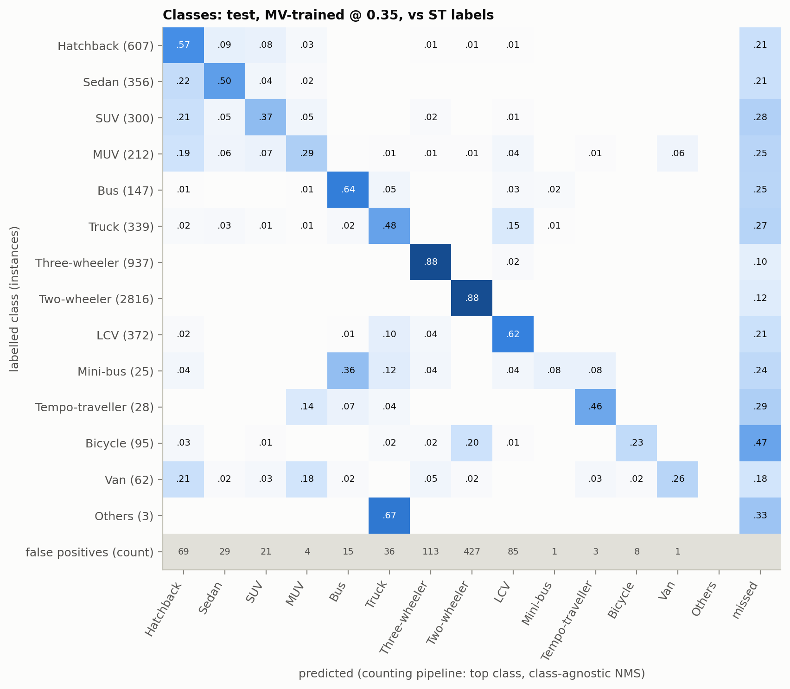

one box per vehicle
top class, conf ≥ 0.35
→
top class, conf ≥ 0.35
| Two-wheeler | 6 | × 0.75 |
| Car (4 types) | 3 | × 1.0 |
| Auto-rickshaw | 2 | × 2.0 |
| Truck / bus | 1 | × 3.27 |
PCU per frame
14.8
→
14.8
green time ∝ approach PCU
N
E
N
E
A traffic engineer sets green time at a junction from the demand on each approach, measured in Passenger Car Units (PCU): a bus or truck weighs about three cars, a two-wheeler three quarters of one. The decision therefore needs, for every camera frame, the number of vehicles of each class. That makes this an object-detection task: image classification gives one label per frame and cannot count, and segmentation adds labelling and compute cost without changing the count. We fine-tune a COCO-pretrained YOLOv8s to detect 14 Indian vehicle classes and convert its per-class counts to PCU.
| Two-wheeler | 6 | × 0.75 |
| Car (4 types) | 3 | × 1.0 |
| Auto-rickshaw | 2 | × 2.0 |
| Truck / bus | 1 | × 3.27 |
Source. UVH-26 (Sharma et al., 2025; IISc AIM with the Bengaluru Traffic Police; CC BY 4.0): 26,646 frames (1920×1080) from about 2,800 Safe City cameras, 14 classes, with two consensus label sets from crowd annotators: majority voting (MV) and STAPLE (ST). The Hub copy differs from its card in ways that matter: STAPLE covers only 81% of the frames, and STAPLE repeats 0.8% of its boxes exactly (429 in our pool; removed). We draw a seeded pool of 4,000 frames from the 21,726 that have both label sets (3,201 official train, 799 official val), so the MV and STAPLE runs see identical images.
The official split leaks across cameras. UVH-26 has no camera id, and a fixed camera produces near-identical backgrounds. We link two frames when the correlation of their 64×36 gradient-magnitude thumbnails is g ≥ 0.48 and take connected components as pseudo-cameras (3,083 groups; largest 65 frames). CLIP ViT-B/32 similarity, the planned signal, failed: at cosine ≥ 0.92 it chained 35% of the pool into one group, and on 88 hand-labelled hard pairs it separated cameras with AUC 0.80 against 0.97 for g. Under this grouping, 247 of 799 official-val frames (30.9%) share a pseudo-camera with an official-train frame; this is a lower bound, since the link threshold favours precision. A looser direct test (g ≥ 0.36) puts it at 57.4%.

| Our split (seed 87) | Frames | Pseudo-cams |
|---|---|---|
| Train | 3,071 | 2,318 |
| Val | 452 | 355 |
| Test (sealed, sha256) | 477 | 410 |
Whole pseudo-cameras are split 60/20/20 (best class balance of 50 seeds); a purge then moves any val/test frame with a train frame at g ≥ 0.36 into train until none is left. A random audit of 40 test frames still finds a same-camera train frame for 7 (residual leakage ≈17.5%, 95% CI 9–32%). Every class has val and test boxes; Mini-bus (25), Tempo-traveller (28) and Others (3) have fewer than 30 test boxes, so their AP is low-confidence.
| Choice (Ultralytics 8.4 values) | Invariance it asserts |
|---|---|
| Resize to 1280 px (JPEG q95); train and test at 960 px | Vehicle class is recognisable at half of 1080p resolution |
| Horizontal flip, p = 0.5 | Type does not depend on left vs right (it mirrors left-hand traffic: fine for type, not for lane direction, which we do not use) |
| No vertical flip, no rotation | A fixed CCTV camera is never upside down; these would teach impossible views |
| HSV jitter (h 0.015, s 0.7, v 0.4) | Class is invariant to daylight changes between 06:00 and 18:00 |
| Scale 0.5, translate 0.1, Mosaic (off for the last 10 epochs) | Class is invariant to distance from the camera and position in the frame |
YOLOv8s from COCO weights, 960 px, batch 8, seed 42, deterministic, on MV labels, on a free Colab T4. A 5-epoch pilot on val chose to train all layers (mAP@0.50:0.95 0.433, 1.87 min/epoch) over freezing the backbone (freeze=10: 0.405, 1.72 min/epoch). The epoch count, 34, is the largest that fits a 90-minute session with Mosaic epochs costed at their measured 1.35× data cost; the run took 65 minutes and was still improving at its last epoch. Why fine-tune: scored in shared coarse classes on val, COCO YOLOv8s as-is reaches mAP@0.50:0.95 0.181 (it has no three-wheeler, tempo-traveller or van class); the fine-tuned model reaches 0.552 (0.326 → 0.663 on the five COCO-mappable classes). Train/val/test mAP@0.50:0.95 is 0.824 / 0.524 / 0.489: a large fitting gap, concentrated in the car subtypes, but val tracks unseen-camera test within 0.035.
A second run differs from the baseline only in its training labels. A diff of the two checkpoints' stored training arguments shows one differing setting, the data file; the two runs train and validate on identical image lists. Scoring each model only against its own label style is biased, so both models are scored against both label sets (Table 1). Differences come with a 95% paired bootstrap over images (500 resamples).
| mAP@0.50:0.95 | Val, MV labels | Val, STAPLE labels | Test, MV labels | Test, STAPLE labels |
|---|---|---|---|---|
| Trained on MV | 0.5245 | 0.4923 | 0.4892 | 0.4550 |
| Trained on STAPLE | 0.5131 | 0.4948 | 0.4750 | 0.4482 |
| STAPLE − MV (95% CI) | −0.011 (−0.030, +0.014) | +0.003 (−0.013, +0.024) | −0.014 (−0.035, +0.011) | −0.007 (−0.023, +0.008) |
Finding: the label-merging method does not measurably change what is learned. Every interval spans zero, and the PCU errors of the two models are within 0.1 PCU of each other. The evaluation labels matter more: either model loses 0.02–0.03 mAP when scored against STAPLE rather than MV. Only two classes move beyond noise on val (Hatchback −0.039, Two-wheeler −0.012 for STAPLE training; uncorrected for 14 comparisons). A second training seed was not run, so seed-to-seed variance is not measured.
Protocol. Checkpoint, epoch count and the counting threshold were all fixed on val. For counting we keep one box per vehicle (top class, class-agnostic NMS) and sweep confidence 0.05–0.70 on val; the lowest mean absolute PCU error per frame is at confidence 0.35 for both models (MV model: 2.74 PCU per val frame, 14.8% of demand). PCU factors follow IRC:106-1990 (factor at 5% and ≥10% traffic share, interpolated on the training traffic mix): two-wheeler 0.75, car 1.0, auto-rickshaw 2.0, LCV and tempo-traveller 1.57, truck, bus and mini-bus 3.27, bicycle 0.4. The test set was then evaluated once, after its checksum was verified.
| Test (477 frames) | MV model | STAPLE model |
|---|---|---|
| mAP@0.50 (MV labels) | 0.571 | 0.555 |
| mAP@0.50:0.95 (MV labels) | 0.489 | 0.475 |
| mAP@0.50:0.95 (STAPLE labels) | 0.455 | 0.448 |
| PCU error per frame, mean |·| | 2.61 | 2.70 |
| … as share of mean demand (16.5 PCU) | 15.8% | 16.4% |
| PCU bias per frame (− = under-count) | −0.93 | −1.25 |
| Vehicle-count error per frame | 1.75 | 1.81 |
PCU and count errors are against STAPLE labels; against MV labels the MV model's PCU error is 2.29 per frame with bias +0.20, so most of the under-count is STAPLE labelling more vehicles. Per-class test AP@0.50:0.95 (MV model, MV labels): three-wheeler 0.80, two-wheeler 0.73, bus 0.65, sedan 0.59, LCV 0.59, hatchback 0.58, truck 0.55, tempo-traveller 0.48*, SUV 0.44, bicycle 0.43, MUV 0.39, van 0.35, mini-bus 0.26*, others 0.01* (*fewer than 30 test boxes).


Test frames were ranked by absolute PCU error and by missed vehicles; the 30 worst (24% of all absolute PCU error) were rendered with every box coloured by outcome and each was given one cause.
| Cause | Frames | |PCU| error | Net PCU |
|---|---|---|---|
| Dense occlusion | 11 | 103 (40%) | −96 |
| Small or distant vehicle | 7 | 66 (20%) | −39 |
| Cut off at frame edge | 5 | 51 (20%) | −32 |
| Fine-grained confusion | 3 | 32 (10%) | −13 |
| Other (unlabelled parked vehicles; a crane) | 2 | 23 | +2 |
| Lighting (low sun, haze) | 1 | 9 | −9 |
| Label noise / MV–STAPLE disagreement | 1 | 8 | −8 |
The dominant pattern: occluded vehicles go uncounted, so demand is under-estimated. 24 of the 30 worst frames are under-counts. The largest group is vehicles hidden behind other vehicles in queues, rows of parked two-wheelers, and trucks or buses behind hoardings, flyover pillars and market umbrellas. Hidden heavy vehicles cost most, at 3.27 PCU each. One construction-site camera under a flyover supplies three of the 30. Label disagreement explains little: in 28 of the 30 frames every missed vehicle is also in the MV labels.


What I would deploy: YOLOv8s fine-tuned on majority-vote labels, counting one box per vehicle at confidence 0.35. On cameras it never saw it reaches mAP@0.50:0.95 of 0.489 (MV labels) and estimates demand within 2.6 PCU per frame (15.8%), with a slight under-count. STAPLE labels are not worth switching to for training: the measured effect is within ±0.02 mAP of zero. The number I refuse to promise is the demand of a dense queue: the worst frames are 10–16 PCU short because occluded heavy vehicles are missed, so green time set from these counts needs a density-dependent correction or a safety margin. I also do not promise per-class counts for the car subtypes or for mini-buses, tempo-travellers and "others", and ≈17% residual same-camera overlap means test may slightly flatter performance on a truly new camera.
AI assistance. Claude (Anthropic), working through Claude Code, wrote the code in the repository, ran the Colab notebook through browser automation at the author's request, proposed analysis options, assigned the Phase 6 cause tags from the rendered images, drew Figure 1 and drafted this report from the notebook outputs. The author set the plan and made the design decisions recorded in the decision log: the pseudo-camera signal and thresholds, split ratios and purge, freeze choice, the STAPLE headline column, the PCU mapping and the threshold rule. Figures 2–5 are notebook outputs; every number above appears in a notebook cell output.
Dataset. A. Sharma, C. Mhatre, S. Gawali, R. Bokkasam, B. Kishore, V. Pattanaik, T. Rambha, A. R. Pinjari, V. Kovvali, A. Chakraborty, P. Rathore, R. Krishnapuram, Y. Simmhan. Towards Image Annotations and Accurate Vision Models for Indian Traffic, UVH-26-v1.0. Technical report, IISc, 2025. arXiv:2511.02563. Licence CC BY 4.0; Hub revision 59f82c5.
G. Jocher, A. Chaurasia, J. Qiu. Ultralytics YOLOv8, 2023 (v8.4.173 used). · A. Radford et al. Learning transferable visual models from natural language supervision (CLIP). ICML 2021. · S. K. Warfield, K. H. Zou, W. M. Wells. Simultaneous truth and performance level estimation (STAPLE). IEEE TMI 23(7), 2004. · Indian Roads Congress. IRC:106-1990, Guidelines for Capacity of Urban Roads in Plain Areas.